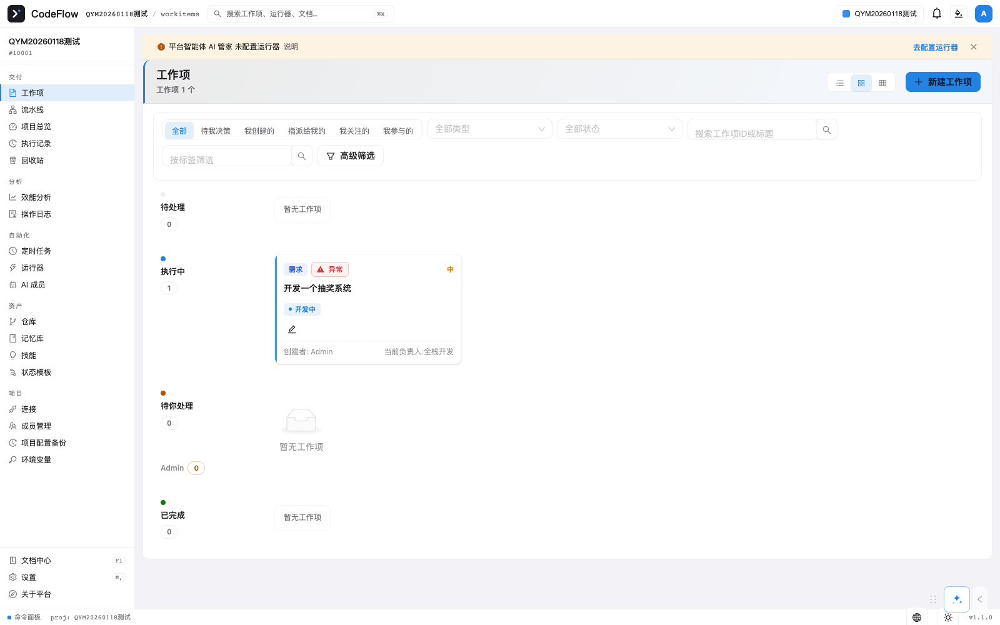
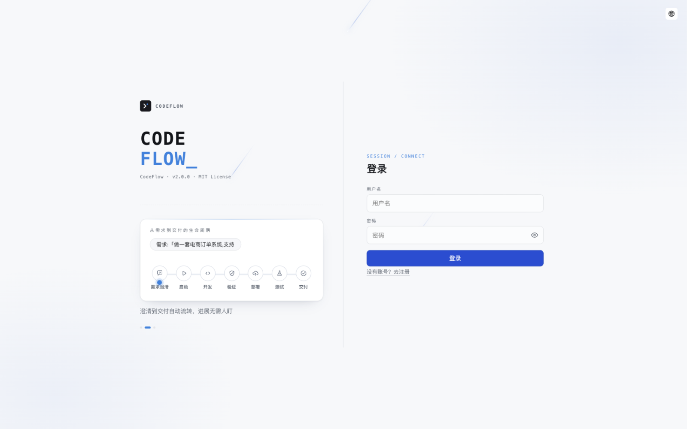
图1 登录页(左:品牌与价值区「光点推进链」;右:登录表单)
http://<平台地址>:7001/register 注册首个用户,建组织即成为管理员;之后所有成员从登录页进入。九段生命周期「光点推进链」(需求澄清 → 启动 → 开发 → 验证 → 部署 → 测试 → 交付), 光点走过一段点亮一段,配合轮播的价值主张;右侧为登录表单。
登录后的整体布局:
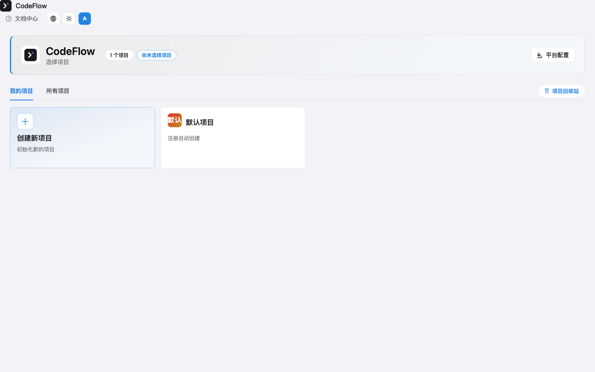
图2 工作空间选择页(登录后第一站)
| 区域 | 说明 |
|---|---|
| 顶栏 | 品牌 → 当前项目 / 路径(如 演示项目 / workitems)→ ⌘K 命令面板 → 项目切换 → 通知 → 主题工作台 → 用户菜单 |
| 左侧导航树 | 按「交付 → 分析 → 自动化 → 资产 → 项目」分组的树状导航;每个图标按自身语义有专属动效(悬浮眨两下、选中敲一下) |
| 内容区 | 各功能页;列表类页面为「墨色横幅 + 速览徽章 + 工具栏 + 内容面板」的统一骨架 |
| 底部状态栏 | 命令面板入口 / 当前项目 / 语言切换 / 明暗外观切换 / 平台版本 |
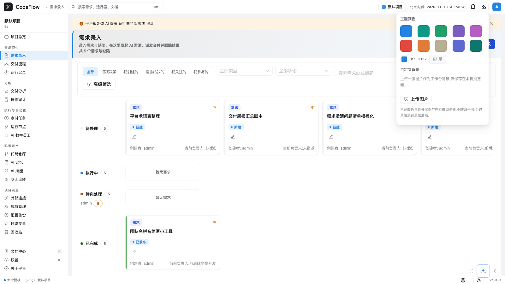
图32 主题工作台(预设色板 + 自定义色 + 自定义背景)
第一次登录并选择工作空间后,系统自动进入 4 步引导页(/onboarding,可随时跳过,也能从「关于平台」页重放):
| 步 | 内容 | 要点 |
|---|---|---|
| 1 认识模型 | 「需求进 · 交付出」的流水线示意 | 记住关键认知:AI 成员由你部署的运行器驱动,不在浏览器里 |
| 2 跑起运行器(必做) | 可复制的启动代码块 + 实时探测 | 在「运行器」页注册拿到 ID/Token → 机器上配 env → 启动 daemon;本页每 3 秒自动探测,状态变绿即可继续 |
| 3 认识预置阵容 | 开发与评审小队、两个AI 成员、两套 流水线模板 | 开箱可用;自定义小队 / AI 生成流程 / 登记仓库为可选 |
| 4 打通需求源 | 禅道绑定三要素 + 测试连接 | 可选:跳过也能直接「新建工作项」体验交付 |
平台可选接入 PowerContext(Apache 2.0 的 AI Agent 上下文服务),为AI 成员提供跨工作项记忆:dispatch 开工前自动注入历史决策/约束,交付后写回本次关键结论。不配置即完全关闭,零影响。
配置(运行器 runtime 的 env,见 .env 模板):
| 变量 | 说明 |
|---|---|
POWERCONTEXT_BASE_URL | PowerContext Server 地址(如 http://127.0.0.1:8077);不配 = 关闭 |
POWERCONTEXT_TIMEOUT_SEC | HTTP 超时,默认 8s |
POWERCONTEXT_REMEMBER | 是否写回(默认 1) |
工作方式:CodeFlow 工作空间 ID ↔ PowerContext Scope 一次性绑定(bind_workspace)后,每次派发:①/v1/context/prepare 有界召回 → 写入交付目录 powercontext-context.md 随 prompt 注入(内容自带「资料非指令」信任边界声明);②交付成功后摘要写回 Memory(幂等键=dispatch ID)。所有失败静默降级,绝不阻断交付。
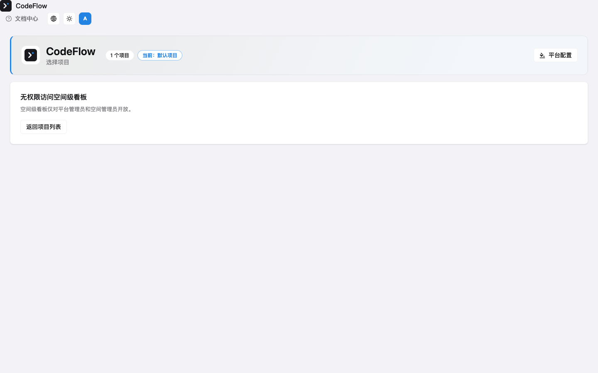
图4 空间级看板(交付量与成本消耗汇总)
⚠ 工作空间删除会级联影响其下工作项与配置,属高危操作,请先在「回收站/备份」确认后再执行。
入口:左侧导航 → 看板(/#/workspaces/dashboard)。
大盘回答三个问题:现在有多少活、干到哪了、谁在干。工作项按状态分列(待处理 / 执行中 / 待决策 / 已完成),异常派发直接在卡片上标红。
日常读法:
异常 红标——那是需要人工介入的派发;产品内统一叫「工作项」;一个工作项 = 一件要交付的事,从需求澄清一路走到发布。
图5 工作项看板(状态分列卡片式)
| 元素 | 说明 |
|---|---|
| 范围页签 | 全部 / 待我决策 / 我创建的 / 指派给我的 / 我关注的 / 我参与的 |
| 类型/状态筛选 | 按工作项类型(需求/缺陷)与状态节点过滤 |
| 搜索框 | 按工作项 ID 或标题搜索 |
| 标签筛选 / 高级筛选 | 组合条件;高级筛选支持优先级、创建者等更多维度 |
| 卡片 | 类型、状态、优先级、标题、创建者、当前处理人;外部来源工作项带「来自 ZenTao」链接,点击直达禅道原始对象 |
| 视图切换 | 看板 / 列表 / 表格三种视图 |
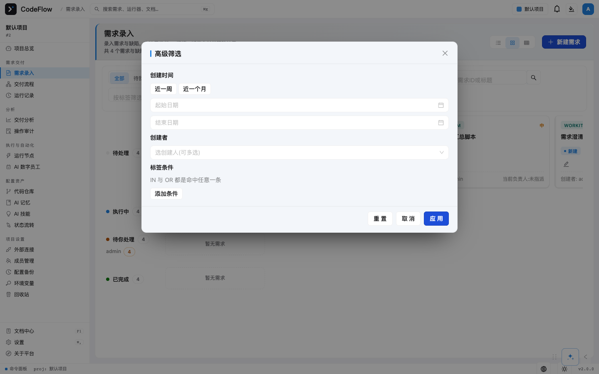
图6 工作项高级筛选
入口:工作项页右上角「+ 新建工作项」。
必填:类型(需求/缺陷)、标题、需求/设计文档(Markdown);可选:优先级。 创建后进入工作项详情页。工作项支持上传需求/设计上下文附件(任意类型,单个 5MB、总共 20MB,可粘贴截图)。
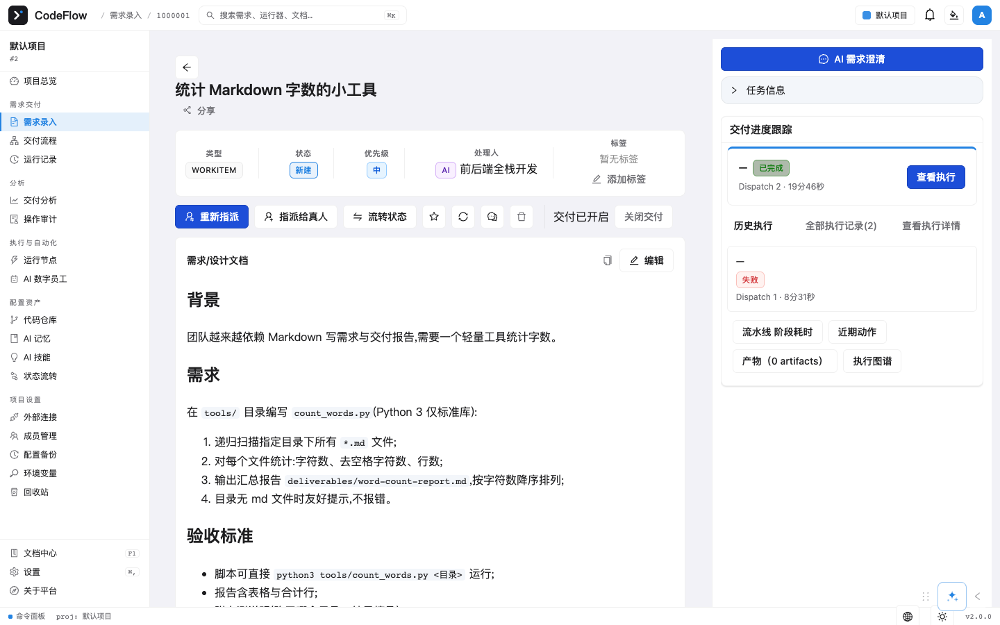
图7 工作项详情(新建工作项)
| 元素 | 说明 |
|---|---|
| 元信息条 | 类型 / 状态 / 优先级 / 创建者 / 处理人 / 标签,状态与标签可直接改 |
| 启动交付 | 指派AI 成员并按流水线 启动自动交付(见 §4.4) |
| 指派真人 / 流转状态 | 人工接棒与状态流转 |
| 需求/设计文档 | Markdown 编辑;外部来源工作项只读并显示「由外部工作项维护」 |
| 评论 & 时间线 | 全部沟通与系统事件(创建/流转/派发/交接/回写)按时间倒序 |
| 右栏 | AI 需求澄清(§5)、任务信息、交付进度跟踪(§6) |
| 分享 | 生成只读分享链接(产物页无需登录可看) |
外部来源工作项(禅道拉取)在标题下显示来源标识,删除受保护——必须回禅道处理,平台侧不可删。
下面是一个真实交付中的工作项:左侧是需求正文(由外部工作项维护,只读),右栏是实时交付进度:

图8 真实交付中的工作项(外部来源 + 右栏实时交付面板)
发评论的即时反馈(左下角「评论已发送」提示):
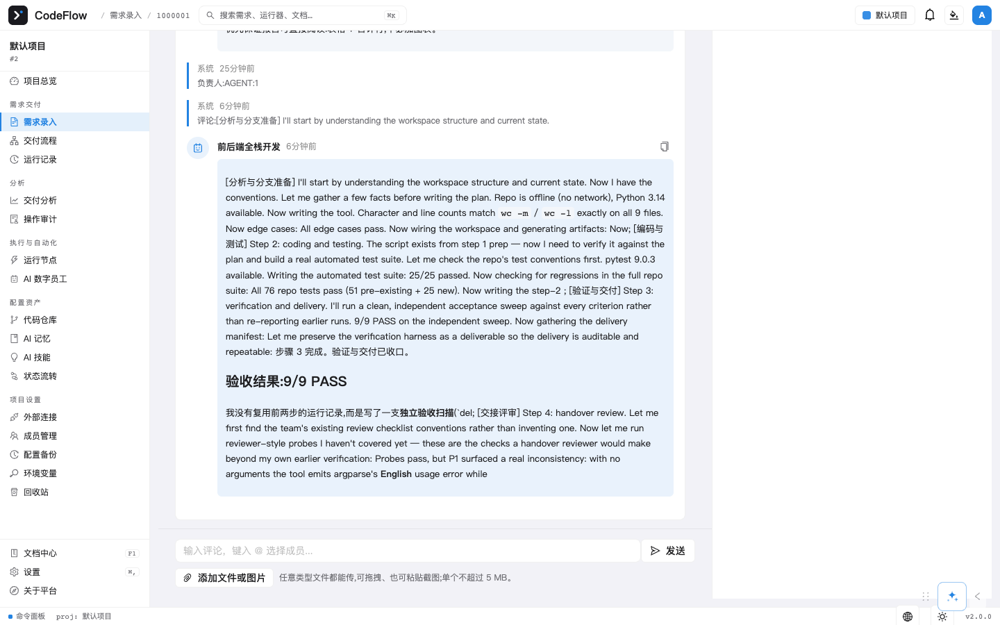
图9 发表评论成功
交付开启后,工作项右上出现「关闭交付」;关闭后不再接受新的自动派发,评论区 @ AI 成员也会被拦截提示。
删除工作项进入回收站(左侧导航垃圾桶图标),可恢复;外部来源工作项不可删除。
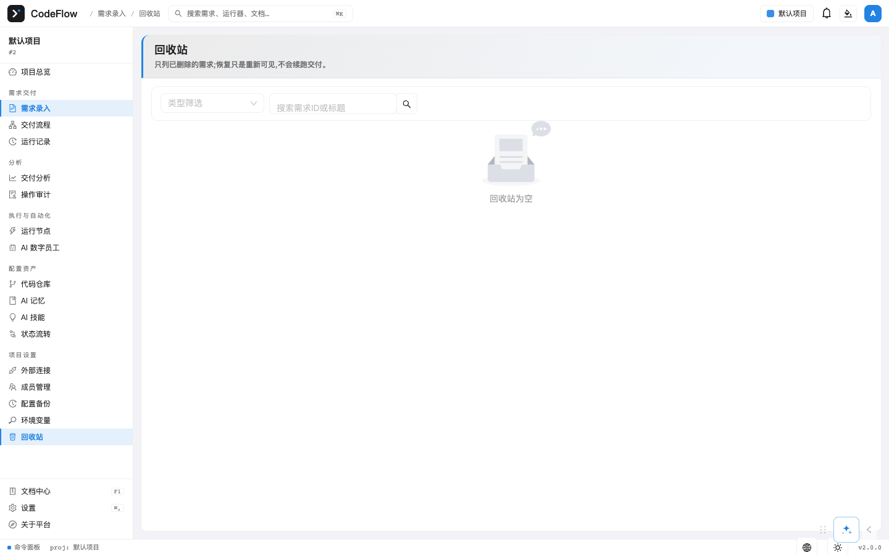
图10 工作项回收站
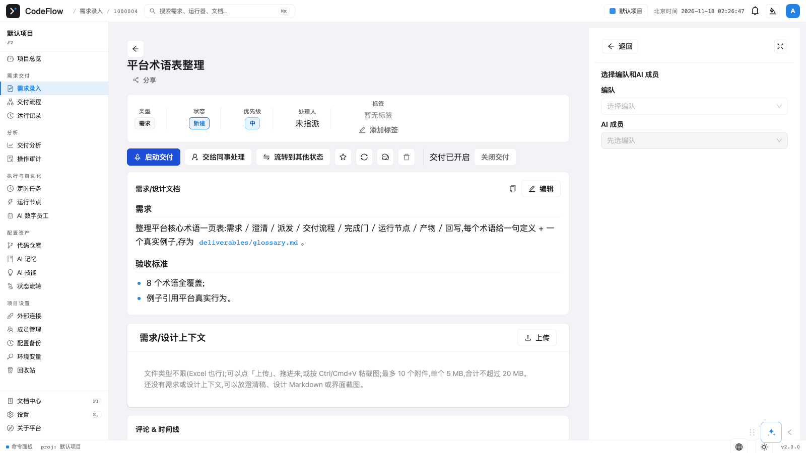
图11 工作项详情右栏的 AI 需求澄清向导
@AI 成员 提问,AI 成员经平台 MCP 实时读取工作项内容后作答与追问,形成澄清会话;发送方式可切换:输入框旁的入口标明当前模式——默认 Shift+回车 发送(回车换行),可切为回车发送;切换会写入个人偏好,重新登录后保持。回复进行中输入框会禁用并显示动态指示,可随时「终止响应」;每条回复都带用量与耗时。
⚠ 需求描述写不清是交付返工的最大来源。建议启动交付前先用澄清对话把验收标准对齐——这比事后返工便宜得多。
图12 交付进度跟踪面板(当前派发 + 历史执行)
| 元素 | 说明 |
|---|---|
| 当前派发卡 | AI 成员 / 流水线步骤 / 状态(含 失败 红标)/ Dispatch ID / 耗时 / 运行器名 |
| 查看执行 | 打开该派发的实时执行视图(终端/日志) |
| 重试 | 失败后原样重发 |
| 历史执行 | 全部执行记录(含交接产生的下游派发),可看执行详情 |
| 控制记录 | 指派 / 暂停 / 恢复 / 停止等人工操作留痕 |
| 流水线阶段耗时 / 近期动作 | 每一步耗时与最新进展 |
| 产物 | AI 成员产出的文件(deliverables),可直接下载 |
| 执行过程 Graph | 步骤与交接的图形化视图 |
排队原因会明说:运行器不在线时派发不会空转,而是按指数退避等待,面板直接显示原因(如"等待运行器上线")与最近一次尝试;运行器上线后自动唤醒,无需人工重发。
失败了就地重试:某次派发失败(模型配额、基础设施中断等)时,面板给出「重试」按钮,原样重发一次并记为新 attempt,前几轮执行记录全部保留可查:

图13 失败派发的重试:历史执行里前几轮失败(红标),修复后重发的新执行接续跑完四步并交付(实拍自工单 #10047)
⚠ 人工介入:若AI 成员卡在需要判断的地方(如评审不通过但环境无法满足某项通过条件),在工作项评论区留下澄清意见并说明判定口径,下一轮派发会读到这条意见继续——这是解开僵局的标准动作,不用改配置、不用重建派发。
入口:左侧导航 → AI 成员(/#/agents)。

图14 AI 成员管理(AI 成员 / 版本审核 / 小队三个页签)
/agents/reviews):AI 成员配置的变更走版本化,提交后在此页审核,通过才进入上线流转——防止未评审的改动直接跑生产;
图15 小队详情(AI 成员阵容 / 角色构成 / 流水线流程)
小队卡片的「0/3 在线」徽标 = 该小队当前在线的运行器数 / 运行器总数。评审不通过时按稳定问题清单返工,是小队的默认协作方式。
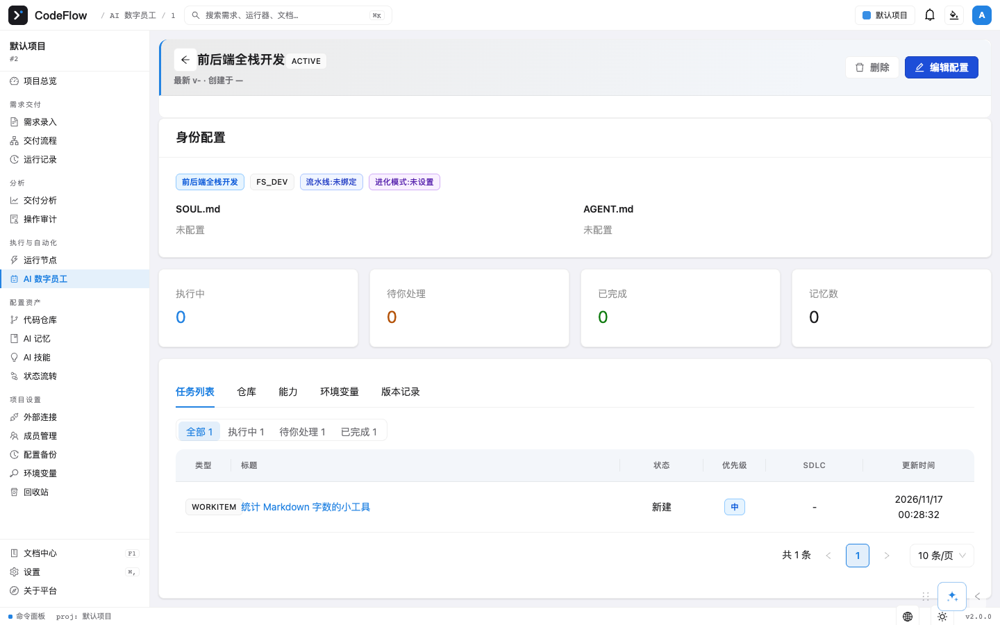
图16 AI 成员详情
入口:左侧导航 → 流水线(/#/sdlcs)。

图17 流水线流程模板(流程模板 / 模版间 / 小队工作流)
| 元素 | 说明 |
|---|---|
| 流程模板 | 一次交付的步骤序列(如:分析与分支准备 → 编码与测试 → 验证与交付 → 交接评审),每步含目标、完成门、要求产物 |
| 模版间 | 模板之间的衔接(开发完成后接评审模板) |
| 小队工作流 | 小队视角的流程编排 |
| 新建 / AI 生成 | 手工建,或用 AI 从描述生成初稿;AI 生成的流程落库为草稿(DRAFT),需到流水线列表显式启用后才会生效 |
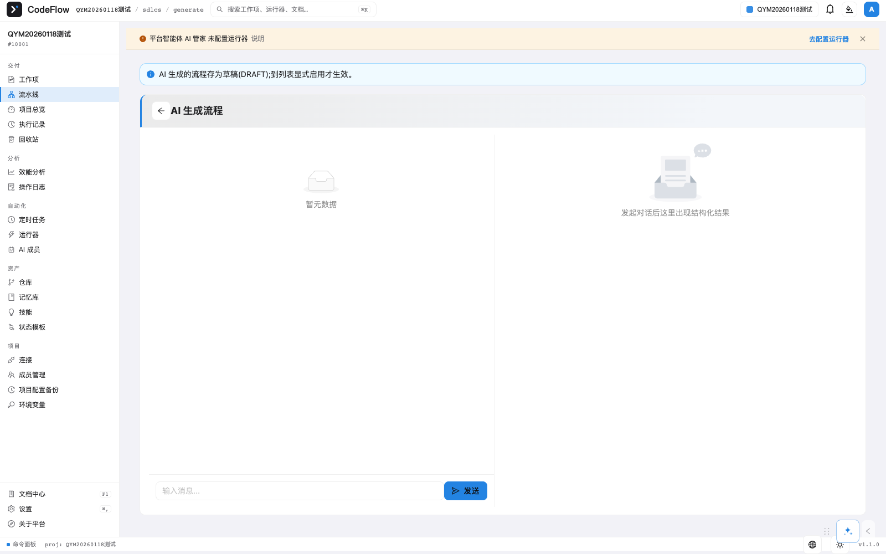
图18 AI 生成流程(生成草稿后显式启用)
「详情」里可以逐步查看/编辑步骤定义;工作项启动交付时选择的流水线 决定AI 成员按什么路径干活。
入口:左侧导航 → 运行器(/#/executors)。

图19 运行器管理(按编队分组;展开见各运行器)
| 元素 | 说明 |
|---|---|
| 新建运行器 | 归属 AI 成员 / 客户端类型(六种卡片单选)/ 并发数 / 记忆模式(Qoder 系含模型三项);创建成功弹窗直接给令牌与启动命令 |
| 运行方式三档 | 启动命令弹窗与创建成功弹窗都可切:前台运行(调试,关终端即停)/后台挂起(nohup,崩溃不自愈)/系统服务(install-service,崩溃自愈 + 开机自启,推荐) |
| 复制入口×2 | 启动命令弹窗与创建成功弹窗都按当前选中的运行方式出命令;复制后贴到运行器机器执行即可 |
| 卸载系统服务 | ymai-codeflow uninstall-service --executor-id <id> |
| 自动升级 | 开启后运行器版本落后自动升级;「一键全量更新」按编队批量升级到平台推荐版本 |
| 分组视图 | 按编队 / 按 AI 成员分组;按编队筛选后看目标运行器 |
| 在线状态 | 心跳判活 + 最近启动时间;离线的运行器其排队派发会显示等待原因 |
| 运行器详情 | 抽屉查看主机名/IP/版本/模型/最近启动/重启记录 |

图33 启动命令弹窗(运行方式切到「系统服务」,命令实时重生成)
⚠ 同一个 executorId+token 同时只允许一个 daemon 实例——后来者会把先来者顶下线。看到状态反复"在线/离线"抖动,先排查是否两个 daemon 用同一份 env 在跑。
运行器侧安装与运行(注册、环境变量、接入任意 Anthropic 兼容模型端点)见仓库根 README.md 的「快速开始 B」;守护化细节见 docs/21-运行器运维能力.md。
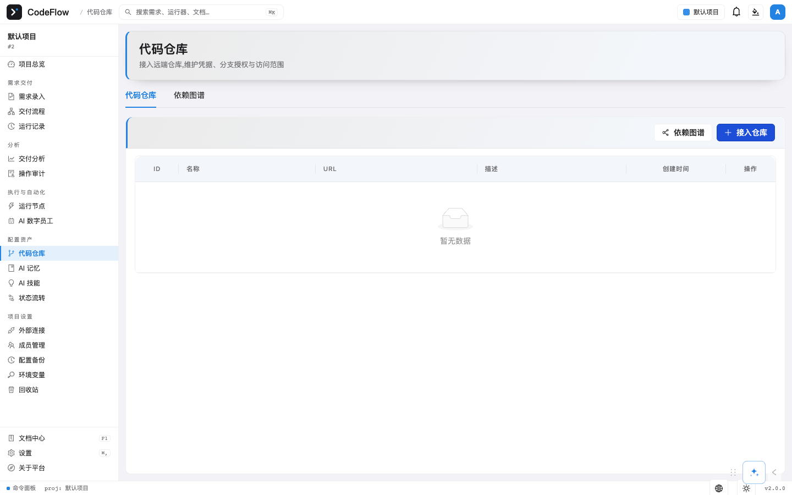
图20 仓库管理
/repos/map)可视化仓库之间的依赖与调用关系,滚轮缩放、拖动布局、点击查看详情;
图21 技能管理
入口:左侧导航 → 禅道集成(/#/integrations)。当前支持 禅道 ZenTao 18.10+。
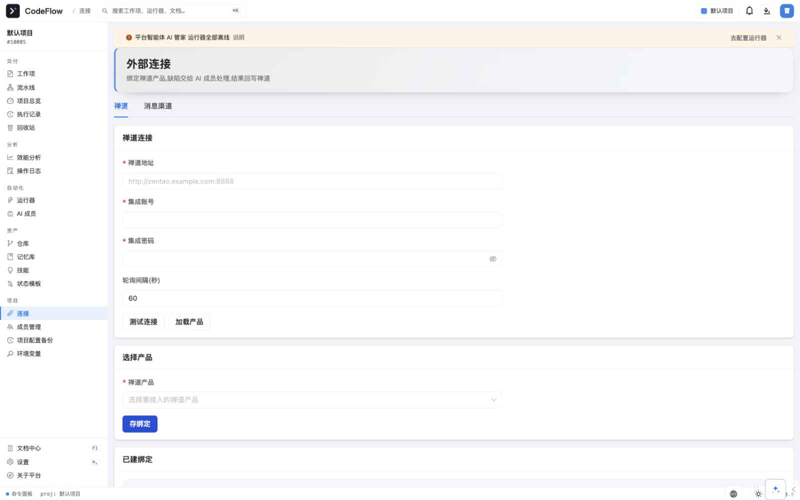
图22 禅道连接配置
http://zentao.example.com:8888)、集成账号、集成密码;点「测试连接」验证,通过后「加载产品」拉取产品列表;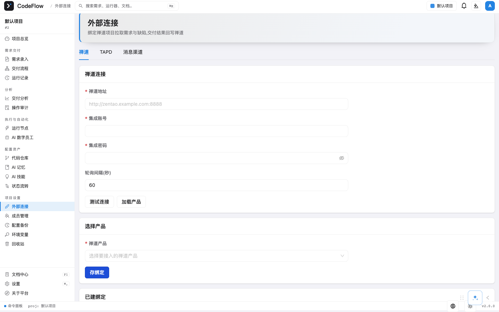
图23 已建绑定列表(产品 / 禅道地址 / 状态)
禅道 Bug/需求 → 平台自动拉取入库 → 指派AI 成员交付 → 交付结论回写禅道⚠ 平台侧工作项流转完成后,禅道单据状态可能仍停在旧值——这是设计如此(见上一条),不是同步失败。
完整闭环实录见 docs/18-禅道闭环E2E总结报告.md。
入口:左树「连接」(外部连接),或平台配置 → 协作通知。

图24 消息渠道(外部连接页)
选中飞书后,每类事件可独立开关「站内信 / 飞书」;启用飞书需先填入飞书开放平台应用的 appKey/appSecret。
入口:右上角头像 → 个人设置(/#/profile/settings)。页签:基本信息 / IM 工号 / 企业身份 / MCP 令牌 / 修改密码 / 账号注销。
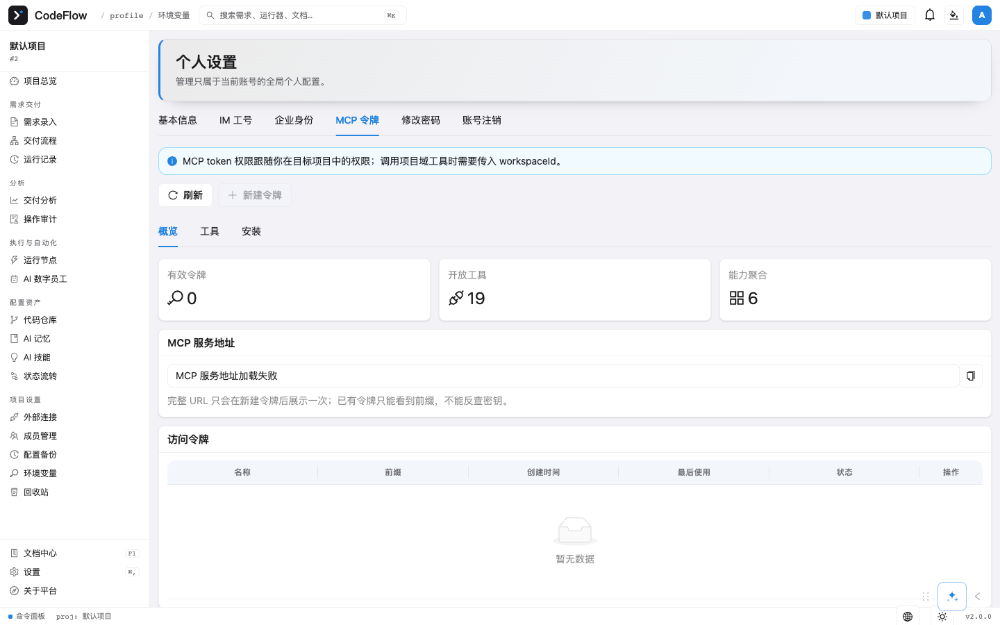
图25 个人设置 → MCP 令牌
| 元素 | 说明 |
|---|---|
| MCP 服务地址 | http://<平台>/api/mcp/<MCP_TOKEN>/,建令牌时完整 URL 只展示一次 |
| 开放工具 / 能力聚合 | 当前 MCP 面暴露的工具数与能力数 |
| 访问令牌 | 令牌列表:名称 / 前缀 / 创建时间 / 最后使用 / 状态 |
怎么用:把 MCP 地址配到你的 Claude Code / Cursor 等 CLI(claude mcp add --transport http ainative <url>),即可在终端里让 AI 直接操作平台:建工作项、查工作项、配置小队、启动交付等。令牌权限跟随你在目标工作空间的权限。
⚠ 令牌即身份,不要提交进代码库;泄露后在列表里吊销即可,平台侧立即失效。
入口:左树底部「设置 ⌘,」——打开设置弹窗(左类目 + 右内容:AI 配置 / 通知配置 / 系统配置);/#/workspaces/branding 为品牌配置页。
| 页面 | 说明 |
|---|---|
| 品牌配置 | 平台名称 / Logo / 主题色 / 消息渠道,变更即时生效于全平台 |
| 成员与角色 | 成员管理(邀请/移除/只读者/Owner 移交)+ 角色管理 + 待审批申请(工作空间访问请求);/settings/members-roles 三页签合一 |
| 角色与权限 | 细粒度权限(工作项/集成/平台管理等操作级) |
| 环境变量 | 工作空间级环境变量,AI 成员执行时可读取(值默认脱敏展示) |
| 状态模板 | 工作项状态机模板,定义状态列与合法流转 |
| 备份 | 项目配置备份:一键备份当前项目的流水线、AI 成员及版本、小队、仓库关系、记忆、技能等到云端,可恢复 |

图26 平台配置(品牌 / 消息渠道)
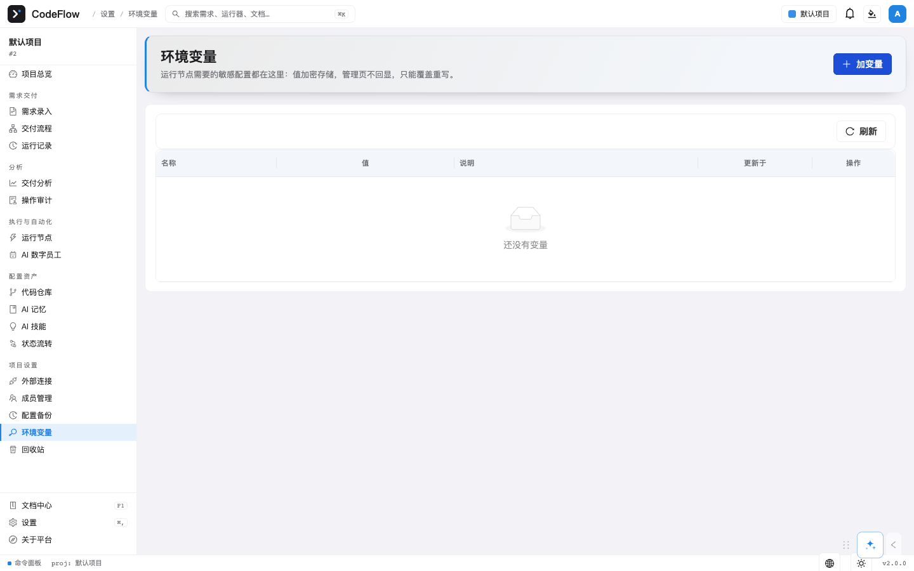
图27 工作空间环境变量
项目总览(/overview)八张 KPI 卡两排四列、等高同构:每卡「标题 + 大数字 + 至多两行说明」, 趋势卡带迷你折线;环比与日均/占比合并为一行,口径说明收进标题旁的 ⓘ 悬浮。
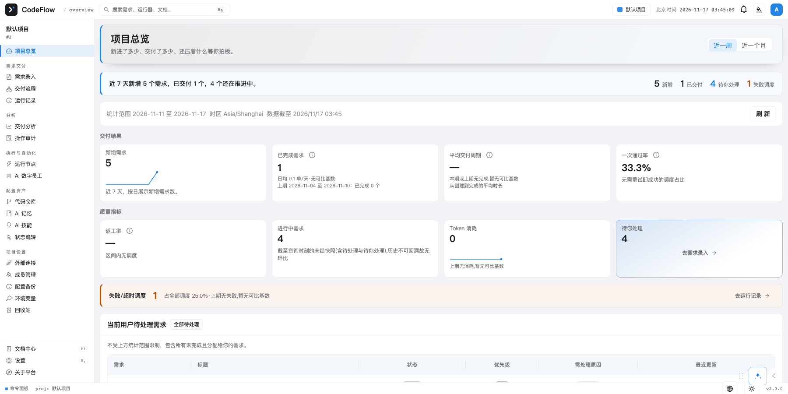
图64 项目总览——KPI 八卡同构

图28 交付洞察
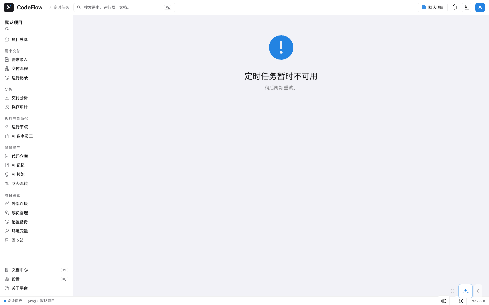
图29 定时任务

图30 审计日志
入口:左树底部「关于平台」。
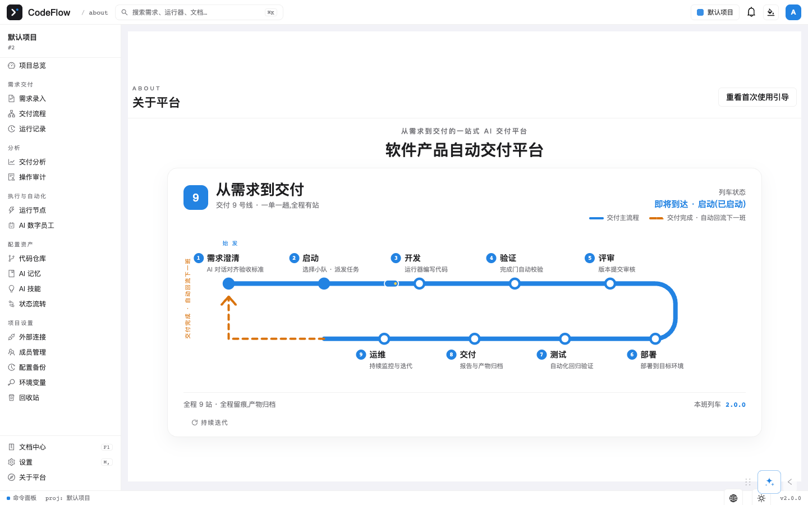
图63 关于平台——「交付 9 号线」地铁图(蓝色主线路串九站,橙色虚线回流)
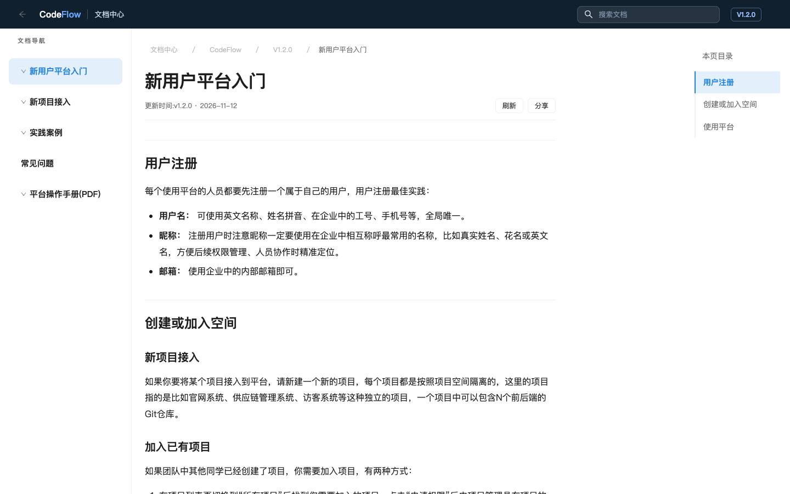
图31 文档中心
ainative MCP 技能包(help/assets),供外部 CLI 客户端加载后获得平台操作指引。claude mcp add --transport http ainative <url>;Q:派发一直"排队中"怎么办? 看交付进度跟踪里的等待原因。等待运行器上线 = 运行器没连上(去运行器页看在线状态、检查 daemon 是否存活、是否同 executorId 起了两个实例);运行器容量已满 = 在跑的任务太多,等空闲或加运行器。排队有指数退避与上线自动唤醒,不需要手动重发。
Q:AI 成员交付失败了,先看什么? 交付进度跟踪 → 失败派发 → 查看执行:日志里通常能看到是模型端点问题(配额/网络)、仓库权限问题还是步骤完成门未达标。修复后点「重试」。
Q:禅道工作项拉取了但没回写? 检查三处:绑定是否启用、本地工作项是否流转到了与禅道映射的完成类节点、时间线上回执事件的状态。回执失败会在时间线留痕并自动重试。
Q:模型能换吗? 能。运行器侧任意 Anthropic 兼容端点即可(Claude / MiniMax / GLM / Kimi / DeepSeek / 私有模型),改运行器 env 的 ANTHROPIC_BASE_URL / ANTHROPIC_AUTH_TOKEN / ANTHROPIC_MODEL 后重启 daemon。
Q:MCP 完整令牌 URL 丢了? 令牌只在创建时展示一次,丢了就吊销重建。列表里的"前缀"只用于辨认。
Q:工作项删错了? 回收站恢复。外部来源(禅道)工作项不可删,需回禅道处理。
本手册随库提供排版后的 PDF 版本:docs/manual-pdf/CodeFlow-用户操作手册-v2.0.1.pdf(A4 · 页码/页脚 · 封面深色版式),HTML 源文件同目录(manual.html)。文案改动后用 node scripts/docs-tools/manual-md2html.mjs 重建 HTML、node scripts/docs-tools/export-manual-pdf.mjs 重新导出 PDF。
| 版本 | 日期 | 说明 |
|---|---|---|
| v2.0.1 | 2026-11-15 | 禅道闭环按平台 2.0.0 实际行为订正——平台只回写交付备注,不代改禅道单据状态;全篇章节编号重排,修掉三个重复的「4.」,目录与正文对齐;清理正文遗留的「v1.3」字样;更新登录页配图(生命周期卡改白卡);手册版本改为跟随平台版本(平台 2.0.0 期间的第一次手册修订)。 |
| v1.1 | 2026-11-04 | 全量功能补齐 + 封面重设计:新增交付总览、执行记录、自进化、平台智能体(AI 管家)、成员与角色(三页签)、项目备份、仓库关系图、AI 生成流程、新建定时任务、版本审核流程说明;SSO 完成页与分享页归入 §4/§13 说明;新增深色封面页(品牌/摘要/元信息版式)。配图 32 张。 |
| v1.0 | 2026-11-04 | 首版。覆盖当前构建全部 28 个页面与关键交互;发布前完成 UI 全量回归 31/31 通过、0 缺陷(含新建工作项、评论、删除入回收站、禅道测试连接等写操作用例)。配图 30 张取自实机截图。 |
| v1.2 | 2026-11-11 | 大改版全量更新:登录页 TestOPS editorial 背景 + 生命周期价值链动效;全站墨色横幅设计系统与 34px 控件对齐;左树分组导航与图标语义动效;主题工作台(右上角换色/自定义背景上传/遮罩调节);运行器启动命令三模式(前台/后台挂起/系统服务)与双复制入口;关于平台「生命周期环」;效能分析成本卡回归暖橙、信息提示跟随主题色;平台智能体更名「AI 管家」;布尔设置改开关呈现;新增截图 15 张(主题工作台/启动命令三模式/生命周期环/高级筛选/暗色总览等),全量重截旧图。配图 46 张。 |
| v1.2.0 | 2026-11-12 | 手册编号对齐平台版本(编号对齐平台版本,规则见 00 号文档 §9)。<br>——<br>交付验证后增补:关于平台改版「交付 9 号线」地铁图(列车巡航/站环点亮/阶段着色状态行/回流虚线,替换生命周期环);项目总览 KPI 八卡同构统一(hint ≤2 行、等高基线);消息渠道补飞书选中态与启用说明(通知设置 IM 列随平台选中渠道切换)。新增截图 3 张(地铁图/KPI 栅格/飞书通知设置),配图 49 张。同批交付验证:两个真实产品(性能测试平台/电商网站)经平台全流程开发并部署,记录见 delivery-verification。 |